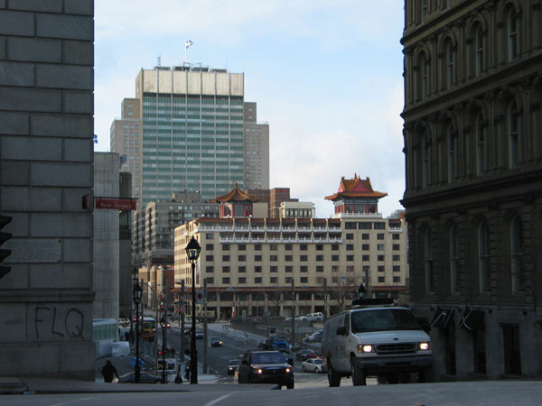

Comment ignorer les bons vieux quartiers de Montréal? Mais j'ai une meilleure question. Qui ne connaît pas les quartiers de Montréal? Et bien, si vous ne connaissez pas les quartiers de Montréal je vais vous les présenter.On commence par le quartier chinois

Le vieux Montréal